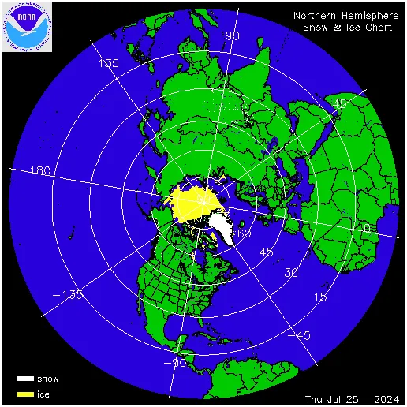
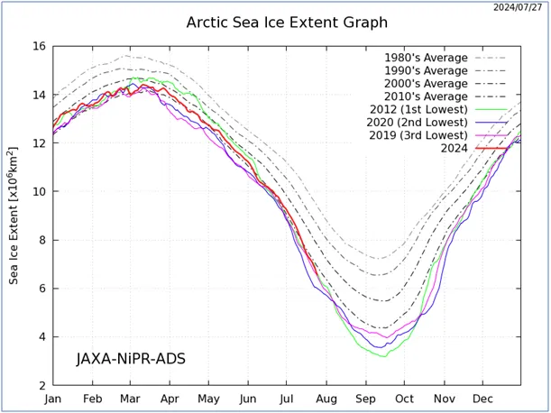
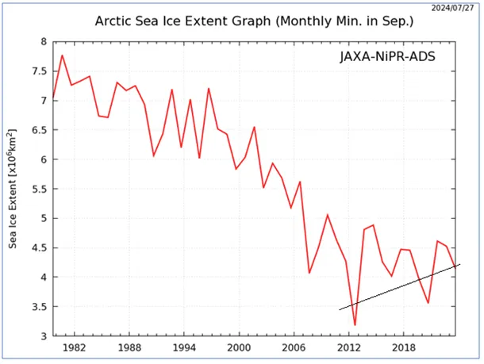
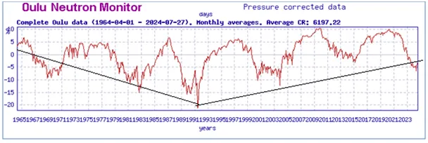
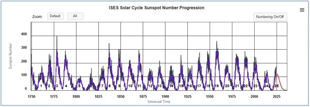

Jest nowy wykres, oczywiście lodu w Arktyce latem przybywa, bo że śniegu to już wiemy.
Lód morski w Arktyce to znany nam temat, ale "fakty" o nim media tworzą pod dyktando zapotrzebowania aktualnej polityki, skierowanej na podwyżki cen energii pod pretekstem ratowania planety. Ideologiczno quasi religijne motywacje pozostawmy karbofrustratom, skupmy się na fizyce Ziemi, nauce, której fragmentem jest klimatologia.

Biegun północny leży na środku Oceanu, a raczej Morza Arktycznego, które jest fragmentem Oceanu Atlantyckiego. Ciepły Prąd Zatokowy, który aż z Zatoki Meksykańskiej przynosi na północ ciepło w rejonach arktycznych się wychładza i jego lodowate wody opadają, aby w postaci prądu zimnego wrócić w głębinach na południe. Ten zimny prąd wynurza się u zachodnich granic Sahary będąc przyczyną suchego klimatu w tej części Afryki. Wychłodzenie Arktyki jest bardzo głębokie zimą, gdy noc polarna otwiera na oścież okno Kosmosu, w którego otchłań na zawsze ulatują niewyobrażalne ilości energii cieplnej przechwyconej gdzieś w okolicach równika przez Ocean Atlantycki.

Oczywiście absurdem jest twierdzenie, że gdyby ten cały lód stopniał lustro oceanu podniosłoby się. Ani o mikron! Wyjaśnił to już ponad dwa tysiące lat temu Archimedes, tu jest mój wpis na ten temat: https://pawelklimczewski.pl/2023/06/06/co-ma-wisiec-nie-utonie. Każdy kto uważa inaczej powinien być przebadany przez komisję wojskową lub weterynarza.
Pierwszy wykres pokazuje dzień po dniu cykliczne, roczne zmiany zasięgu lodu arktycznego, ale najważniejszy jest wykres drugi.

Pokazuje on jak od 40 lat zmieniał się minimalny zasięg, który przypada na wrzesień. Od 12 lat szybko rośnie, czyli lodu w środku lata jest tam coraz więcej źródła na wykresie. Jest to zsynchronizowane z długoterminowym spadkiem aktywności Słońca, którego skutkiem z opóźnieniem 5 letnim jest spadek potencjału ochronnego jonosfery. Słabsza jonosfera wpuszcza więcej promieniowania kosmicznego, które to z kolei katalizuje powstawanie chmur, co z kolei zmniejsza ilość ciepła dostarczanego do oceanów. Cały ten proces z prognozą globalnego ochłodzenia na najbliższe 20/30 lat opisałem tu: https://pawelklimczewski.pl/tag/kosmiczna-prognoza-do-2045/

Odczyty pomiarowe mówią, że pokrywa latem rośnie, a media, że maleje, nic nowego, zapomnijmy o mediach, twórzmy swoje. Wielkość pokrywy lodowej pływającej w oceanie nie ma istotnego wpływu na klimat Ziemi, a jest jedynie dobrym wskaźnikiem tego, co dzieje się w oceanach, bo nauka nie ma na dziś odpowiedzi jak długa jest w nich droga ciepła i ile trwa lat. Bez tej kluczowej wiedzy tworzenie modeli klimatycznych jest żałosną groteską. Atmosfera jest ostatnim ogniwem tej drogi i jak dobrze wiemy nie nagrzewa się od Słońca, o czym pisałem wielokrotnie, a tylko od oceanów i od kontynentów. Pamiętać należy, że ciepło pobrane w dzień od nagrzanego kontynentu już w nocy ulatuje na zawsze w Kosmos i o poranku proces ten się powtarza.

W tej sytuacji kluczem do zrozumienia termodynamiki Ziemi jest poznanie obiegu ciepła w oceanach, od tego dzieli nas jeszcze wiele dekad.
Paweł Klimczewski